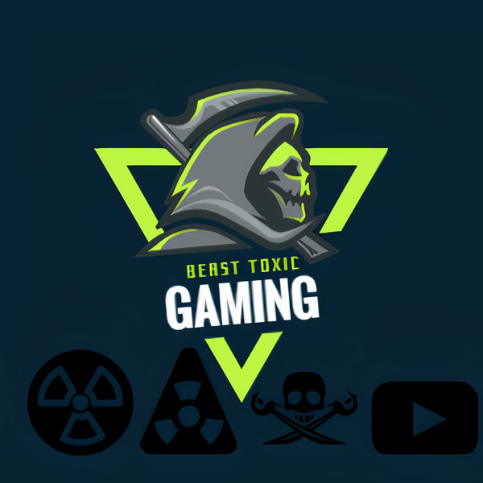

FIRST STEP = DOWNLOAD HIMACHI FROM THE GIVEN LINK
SECOND STEP = AFTER DOWNLOADING HIMACHI CREATE A ACCOUNT OR OF YOU HAVE A ACCOUNT JUST LOGIN
THIRD STEP = AFTER LOGIN CREATE A NETWORK WITH ITS NAME AND PASSWORD YOU CAH ANY NAME AND PASSWORD
NOTE = ONLY 4 OTHER FRIENDS CAN JOIN BECAUSE THERE IS A LIMIT OF ONLY 5 IN THE FREE VERSION AND 1 WILL BE YOU TO GET MORE THAN 5 SLOTS YOU HAVE TO GET A PAID VERSION OF HIMACHI
FOURTH STEP = THEN OPEN YOUR MINECRAFT USING TLANCHER OR ORIGNAL MINECRAFT LAUNCHER
FIFTH STEP = THEN CREATE A NEW WORLD
SIXTH STEP = AFTER CREATING A NEW WORLD PRESS ESC AND CLICK THERE ON CREATE LAN WORLD OR SOMETHING LIKE THAT AND START IT
YOU HAVE CREATED A LAN WORLD CONGS!!
STEP 7 = FOR JOINING OF YOUR FRIENDS YOUR FRIEND HAVE TO GO TO MULTIPLAYER THERE IT WILL BE SCANNING WORLD ON LOCAL NETWORK FROM THERE YOU ARE FRIENDS CAN JOIN AND YOU CAN PLAY AND ENJOY!! THANKS FOR READING THIS!! 😄
REGARDS BEAST TOXIC GAMING AKA MUKUL TANWAR
